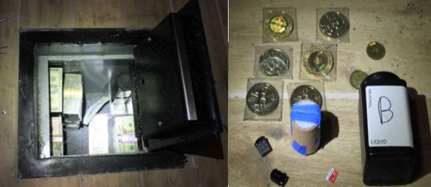
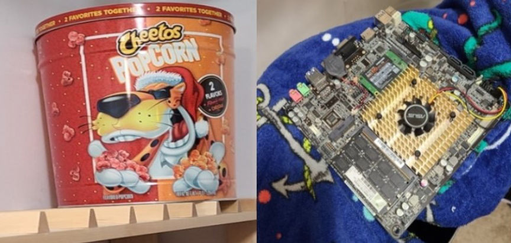
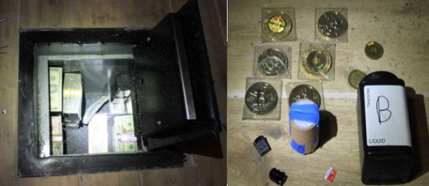
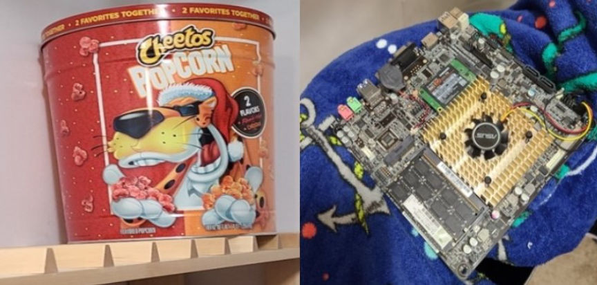

Georgia Man Imprisoned for Defrauding Silk Road
A Georgia man who stole bitcoins worth billions of dollars from the now-defunct Silk Road dark web marketplace and stored it in a single-board computer hidden in a popcorn tin has been imprisoned.
According to a press release by the United States Attorney's Office for the Southern District of New York, 32-year-old James Zhong of Georgia stole approximately 50,000 bitcoin from Silk Road in 2012, by making multiple fraudulent withdrawals from the market.
Zhong reportedly executed the fraud scheme by creating nine accounts on the market in September 2012. He would then make Bitcoin deposits into the accounts followed by successive withdrawals whose total exceeded his initial deposits.
In one such case on September 19, 2012, ZHONG allegedly deposited 500 Bitcoin into a Silk Road account he had created. He then made five withdrawals of 500 Bitcoin each from the account within one second. In total, Zhong made approximately 140 similar transactions and was able to withdraw a total of approximately 50,000 bitcoin.
In 2017 he received a total of 50,000 Bitcoin Cash into the wallets as a result of the Bitcoin hard fork. He later swapped the Bitcoin Cash into approximately 3,500 Bitcoin.
Close to a decade later, investigators executed a search warrant at Zhong's residence on November 9, 2021. The investigators found and seized approximately 50,500 Bitcoin worth over $3 billion at the time. They also recovered and seized $661,900 in cash, 25 Casascius coins, silver bars, gold bars, and one gold coin.

He later surrendered a total of approximately 1,004 bitcoin in March, April, May, and June 2022.

Zhong pleaded guilty to one count of wire fraud on November 4, 2022.
In total, Zhong was ordered to forfeit approximately 51,680.32 bitcoin worth over $1.5 billion. He was also ordered to forfeit the cash and other assets seized from his residence.
United States District Judge Paul G. Gardephe sentenced him to one year and one day in federal prison on April 14, 2023.
James Zhong
According to a press release by the United States Attorney's Office for the Southern District of New York, 32-year-old James Zhong of Georgia stole approximately 50,000 bitcoin from Silk Road in 2012, by making multiple fraudulent withdrawals from the market.
Zhong reportedly executed the fraud scheme by creating nine accounts on the market in September 2012. He would then make Bitcoin deposits into the accounts followed by successive withdrawals whose total exceeded his initial deposits.
In one such case on September 19, 2012, ZHONG allegedly deposited 500 Bitcoin into a Silk Road account he had created. He then made five withdrawals of 500 Bitcoin each from the account within one second. In total, Zhong made approximately 140 similar transactions and was able to withdraw a total of approximately 50,000 bitcoin.
In 2017 he received a total of 50,000 Bitcoin Cash into the wallets as a result of the Bitcoin hard fork. He later swapped the Bitcoin Cash into approximately 3,500 Bitcoin.
Close to a decade later, investigators executed a search warrant at Zhong's residence on November 9, 2021. The investigators found and seized approximately 50,500 Bitcoin worth over $3 billion at the time. They also recovered and seized $661,900 in cash, 25 Casascius coins, silver bars, gold bars, and one gold coin.

The seizied items
He later surrendered a total of approximately 1,004 bitcoin in March, April, May, and June 2022.

The popcorn container and single board computer
Zhong pleaded guilty to one count of wire fraud on November 4, 2022.
In total, Zhong was ordered to forfeit approximately 51,680.32 bitcoin worth over $1.5 billion. He was also ordered to forfeit the cash and other assets seized from his residence.
United States District Judge Paul G. Gardephe sentenced him to one year and one day in federal prison on April 14, 2023.